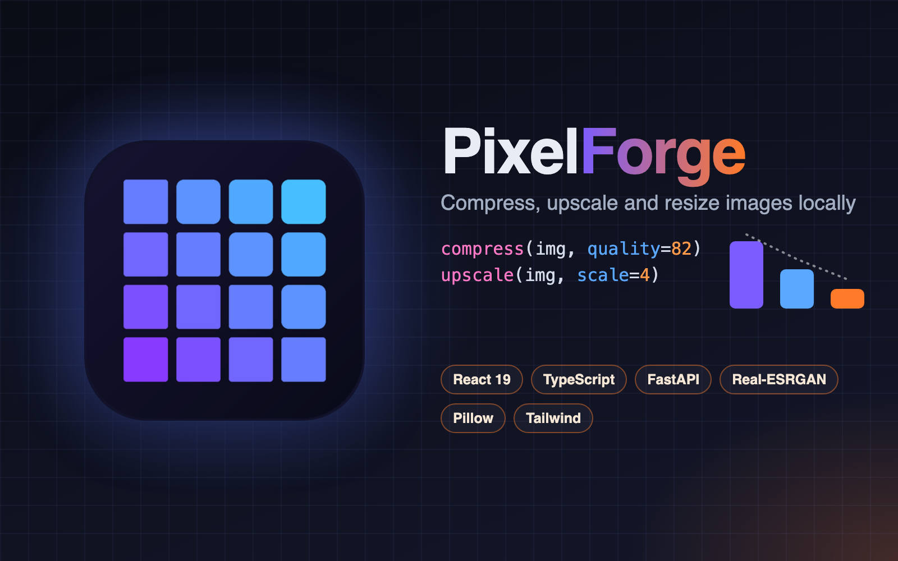
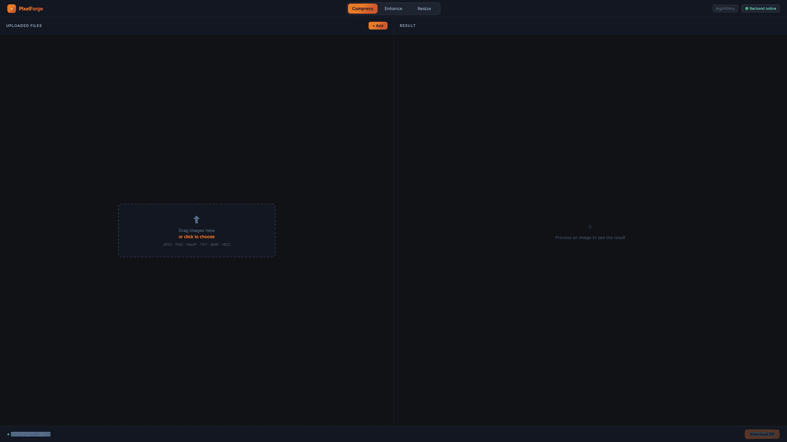

A local, offline image processing app: compress, resize or AI-upscale.
PixelForge is an image-processing workbench that runs entirely on your own machine. Drop images in the browser, let a local service process them and download the results — nothing is uploaded to a cloud service, there is no account and no quota beyond what your hardware allows.
It covers the three operations behind most day-to-day image work: compression, AI upscaling and resizing. Each mode uses the best tool for the job rather than one generic library, and the app works out of the box and gets better on a well-equipped machine.
The workspace is split in two: the upload queue and its settings on the left, the results on the right. Each mode keeps its own queue, so switching tab never discards work.
Compression uses dedicated JPEG and PNG encoders when they are installed and falls back to a built-in encoder otherwise, reporting the exact saving per file. Upscaling runs Real-ESRGAN at ×2 or ×4, on the GPU when available, and keeps transparency intact. Resizing works by exact dimensions or by percentage with a high-quality filter.

The interface is a React and TypeScript single-page app laid out as a two-pane workspace. A FastAPI back end turns every uploaded file into a background job and streams its progress to the browser, so a batch of large images reports status per file instead of freezing on one long request.
The project ships a container build that serves everything from a single process, and a small native macOS wrapper that hosts the interface in its own window, so it can be used as a desktop app rather than a browser tab.
Back-end language for the whole processing layer: the Pillow-based compress and resize services, the Real-ESRGAN (PyTorch) upscaler, the subprocess bridges to mozjpeg and pngquant, and the pytest suite that covers them.
Exposes the local API for processing, resizing, progress streaming, results and downloads, running jobs as background tasks.
Drives the two-pane interface — drag-and-drop upload zone, per-mode file queues, settings box, resize panel, and result views — as React 19 + TypeScript with custom hooks (useFileQueue, useProcessing, useResizeProcessing), built with Vite 8 and styled with Tailwind CSS 4.
App shell and Vite-built static output, served either by the dev server or straight from FastAPI in the production container — and hosted in a WKWebView by the native macOS wrapper.